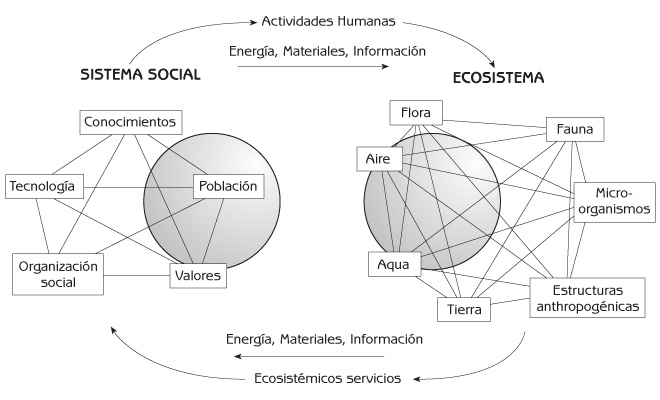
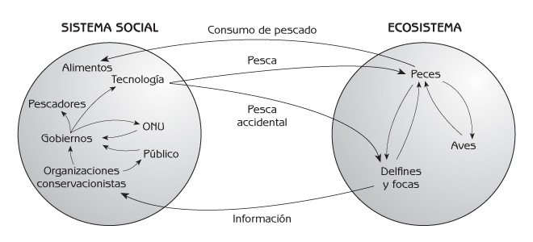
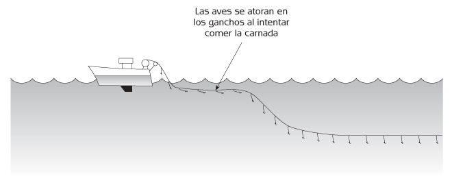
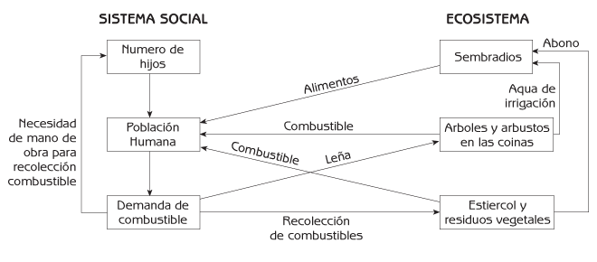
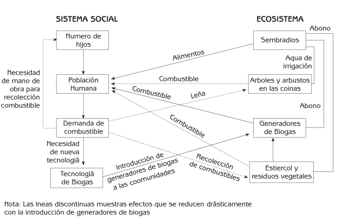
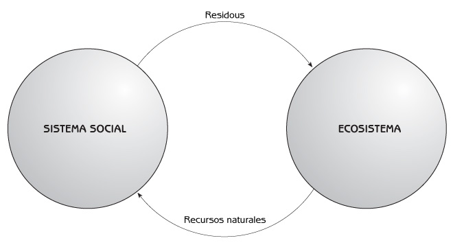

Ecología Humana
Conceptos Básicos para el Desarrollo Sustentable
Autor: Gerald G. Marten
Editorial: Earthscan Publications
Fecha de publicación: November 2001, 256 pp.
Edición en rústica: 1853837148
Edición en pasta dura: 185383713X
Capítulo 1 Introducción
¿Qué es la Ecología Humana?
La ecología es la ciencia de las relaciones entre los seres vivos y su medio ambiente. La ecología humana trata de las relaciones entre las personas y el medio ambiente. El medio ambiente, en la ecología humana se percibe como un ecosistema (ver Figura 1.1). Un ecosistema es todo lo que existe en un área determinada – el aire, el suelo, el agua, los organismos vivos y las estructuras físicas, incluyendo todo lo construido por el ser humano. Las porciones vivas de un ecosistema – los microorganismos, las plantas y los animales (incluyendo a los seres humanos) – son su comunidad biológica.
Los ecosistemas pueden ser de cualquier tamaño. Un pequeño estanque en un bosque es un ecosistema, y el bosque entero es un ecosistema. Una granja es un ecosistema, y un paisaje rural es un ecosistema. Las villas, los pueblos y las grandes ciudades son ecosistemas. Una región de miles de kilómetros cuadrados es un ecosistema, y el planeta Tierra es un ecosistema.
Aunque los seres humanos son parte del ecosistema, es útil pensar en la interacción de los seres humanos y el ecosistema como la interacción del sistema social humano y el resto del ecosistema (ver Figura 1.1). El sistema social incluye todo acerca de las personas, su población y la psicología y organización social que moldean su comportamiento. El sistema social es un concepto central en la ecología humana porque las actividades humanas que ejercen algún impacto sobre los ecosistemas están fuertemente influenciadas por la sociedad en que viven las personas. Los valores y conocimientos – que constituyen juntos nuestra cosmovisión como individuos y como sociedad – determinan la manera en que procesamos e interpretamos la información y cómo la traducimos en acción. La tecnología define nuestro repertorio de acciones posibles. Estas posibilidades son limitadas por la organización social, y las instituciones sociales que especifican conductas socialmente aceptables, transformándolas en acciones reales. Al igual que los ecosistemas, los sistemas sociales pueden tener cualquier escala – desde una familia hasta la totalidad de la población humana en el planeta.

Figura 1.1 Interacción del sistema social humano y el ecosistema.
El ecosistema proporciona servicios al sistema social transportando materia, energía e información hacia el sistema social, para satisfacer las necesidades de las personas. Estos servicios ambientales incluyen el agua, combustibles, alimentos, materiales para confeccionar vestimentas, materiales de construcción, y oportunidades de recreo. Los movimientos de materia son evidentes; los de energía e información no lo son tanto. Cada objeto material contiene energía, cosa que resulta más conspicua en el caso de alimentos y combustibles, y cada objeto contiene información en la manera en que está estructurado u organizado. La información puede moverse de los ecosistemas a los sistemas sociales, independientemente de la materia. La detección de una presa por un cazador, la observación que un agricultor hace de su parcela, la evaluación del tráfico que hace el habitante de una ciudad cuando cruza una calle, y un refrescante paseo por el bosque, son transferencias de información del ecosistema al sistema social.
La materia, energía e información se mueven del sistema social al ecosistema como consecuencia de las actividades humanas que ejercen algún impacto sobre el ecosistema:
- Las personas afectan al ecosistema cuando utilizan recursos como agua, peces, madera, y tierras de pastoreo.
- Después de utilizar los materiales de los ecosistemas, las personas los devuelven como desechos.
- Las personas modifican o reorganizan intencionalmente los ecosistemas existentes, o los crean nuevos, para satisfacer sus necesidades de la mejor manera posible.
Mediante la utilización de máquinas o trabajo humano, las personas utilizan energía para modificar o crear ecosistemas moviendo materiales dentro de ellos, o entre unos y otros. Transfieren información del sistema social al ecosistema siempre que modifican, reorganizan o crean un ecosistema. El cultivo que siembra un agricultor, el espaciado entre cultivos, la alteración de la comunidad biológica de un campo mediante el deshierbe, y la modificación de la química del suelo al aplicar fertilizantes no son solamente transferencias de materiales, sino también transferencias de información, ya que el agricultor reestructura la organización del ecosistema de su granja.
Un ejemplo de interacción entre el sistema social y el ecosistema: la destrucción de animales marinos mediante la pesca comercial
La ecología humana analiza las consecuencias de las actividades humanas como una cadena de efectos a través del ecosistema y el sistema social humano. La siguiente historia es acerca de la pesca. La pesca se dirige hacia una parte del ecosistema; es decir, los peces, pero tiene efectos imprevistos en otras partes del ecosistema. Esos efectos desencadenan una serie de efectos adicionales del ecosistema hacia el sistema social y viceversa (ver Figura 1.2).

Figura 1.2 Cadena de efectos a través del ecosistema y el sistema social (pesca comercial oceánica).
Las redes de deriva son redes de nylon que no se pueden ver dentro del agua. Los peces se enmallan en las redes de deriva cuando tratan de nadar a través de ellas. Durante los años ochenta, los pescadores utilizaron miles de kilómetros de redes de deriva para atrapar peces en todos los océanos del mundo. A mediados de esa década se descubrió que las redes de deriva estaban matando un gran número de delfines, tortugas, y otros animales marinos que se ahogaban al quedar enredados – una transferencia de información del ecosistema al sistema social ilustrada en la Figura 1.2.
Cuando las organizaciones conservacionistas se dieron cuenta de lo que las redes le estaban haciendo a los animales marinos, iniciaron campañas en contra del uso de redes de deriva, movilizando a la opinión pública y presionando a gobiernos con el fin de obligar a los pescadores a abandonar esta práctica. Los gobiernos de algunas naciones no respondieron, pero otras llevaron el problema ante la Organización de las Naciones Unidas, que aprobó una resolución para que todos los países dejaran de utilizar redes de deriva. Al principio, muchos pescadores no querían dejar de utilizarlas, pero sus gobiernos los obligaron a cambiar. Después de algunos años, los pescadores cambiaron de redes de deriva a palangres y otras artes de pesca. Los palangres, que ostentan muchos anzuelos con cebo en un cordel que mide con frecuencia varios kilómetros de largo, han sido un arte de pesca muy común durante muchos años. Los palangres usados actualmente por los pescadores ponen en el agua un total de varios cientos de millones de anzuelos en los océanos del mundo.
La historia de la red de deriva muestra cómo las actividades humanas pueden generar una cadena de efectos que pasa de un lado a otro entre el sistema social y el ecosistema. La pesca afectó al ecosistema (al matar delfines y focas), lo que a su vez condujo a un cambio en el sistema social (en la tecnología pesquera). Y la historia continúa hasta hoy. Hace unos seis años se descubrió que los palangres están matando grandes cantidades de aves marinas, especialmente albatros, cuando las líneas son tiradas al agua desde los barcos. Mientras los anzuelos se van desenrollando de la popa de un barco hacia el agua, las aves vuelan hacia ellos para comerse la carnada de los anzuelos que flotan detrás del barco, muy cerca de la superficie del agua (ver Figura 1.3). Las aves son atrapadas por los anzuelos, arrastradas bajo el agua, y ahogadas. Ya que algunas especies de aves podrían ser llevadas a la extinción local si no se suspende su matanza, los gobiernos y los pescadores están investigando modificaciones a los palangres para proteger a las aves. Algunos pescadores están utilizando una cubierta en la popa de sus barcos para evitar que las aves alcancen los anzuelos, y otros están añadiendo peso a los anzuelos para hundirlos más allá del alcance de las aves antes de que éstas puedan llegar a ellos. También se ha descubierto que las aves no acuden a la carnada que ha sido teñida de color azul.

Figura 1.3 Pesca con palangres.
Esta historia continuará durante muchos años, mientras los efectos se muevan entre el ecosistema y el sistema social. Otra parte de la historia es la que atañe a las focas y otros animales piscívoros cuyas poblaciones pueden estar disminuyendo hacia la extinción en algunas áreas, debido a que la pesca excesiva ha reducido la disponibilidad de su alimento. Los efectos pueden reverberar en muchas direcciones a través del ecosistema marino. Parece ser que la disminución de las poblaciones de focas en aguas ribereñas de Alaska es la causa de la desaparición de los impresionantes bosques de algas de esa región. Las orcas que antes perseguían a las focas, se han adaptado a su disminución, cambiando su dieta por nutrias marinas, reduciendo así la población de esta especie. Los erizos de mar son el principal alimento de las nutrias marinas, y se alimentan de algas. La disminución de las poblaciones de nutrias marinas ha ocasionado el incremento de la abundancia de erizos de mar, y estos han diezmado los bosques de algas que constituyen un hábitat único para cientos de especies de animales marinos. (Al final del Capítulo 11 se presenta otro episodio de la historia de la pesca comercial y los animales marinos).
Deforestación y combustible para la cocina en la India
El problema de deforestación en la India es otro ejemplo de actividades humanas que generan una cadena de efectos entre el ecosistema y el sistema social. La siguiente historia muestra cómo una nueva tecnología (generadores de biogás) puede contribuir a resolver un problema ambiental.
Durante milenios la gente de la India ha cortado ramas de los árboles y arbustos para obtener combustible para cocinar sus alimentos. Esto no era un problema en tanto que no había demasiadas personas; pero la situación ha cambiado con el incremento radical que ha tenido la población de la India durante los últimos 50 años (ver Figura 1.4). Muchos bosques han desaparecido en años recientes debido a la cantidad de árboles y arbustos que se han talado para obtener combustible para la cocina. Actualmente no hay suficientes árboles y arbustos para proporcionar todo el combustible necesario. Las personas han reaccionado ante esta ‘crisis de energía’ haciendo que sus hijos busquen cualquier cosa que se pueda quemar, como ramitas, residuos de cosechas (los trozos de plantas que quedan en los campos de cultivo después de las cosechas) y estiércol de vaca. La recolección de combustible hace que los niños resulten aún más valiosos para sus familias, de manera que las parejas tienen más hijos. El incremento resultante en la población conduce a una mayor demanda de combustible.

Figura 1.4 Deforestación y combustible para la cocina (cadena de efectos a través del ecosistema y sistema social).
La recolección intensiva de combustible para la cocina tiene varios efectos serios sobre el ecosistema. Al utilizar estiércol de vaca como combustible se reduce la cantidad de estiércol disponible para abonar los campos de cultivo, y la producción de alimentos disminuye. Además, el flujo de agua por las laderas, que irriga los campos durante la temporada de sequía, es menor cuando éstas se encuentran deforestadas. Y la calidad del agua es menor porque las laderas deforestadas ya no tienen árboles que protejan el suelo de las lluvias intensas, de manera que la erosión es mayor y el agua de riego contiene grandes cantidades de sedimento que es depositado en los canales de riego, tapándolos. Esta disminución de la cantidad y calidad del agua de riego reduce aún más la producción de alimentos. El resultado para la población es una mala nutrición y peor salud.
Esta cadena de efectos, que involucra al crecimiento demográfico humano, la escasez de alimentos y la disminución de su producción, es un círculo vicioso del que es difícil escapar. Sin embargo, los generadores de biogás son una nueva tecnología que puede ayudar a mejorar la situación. Un generador de biogás es un gran tanque en el que las personas depositan los desechos humanos, el estiércol de los animales y los residuos vegetales, para que se descompongan. El proceso de descomposición genera una gran cantidad de gas metano, que puede utilizarse como combustible para cocinar alimentos. Una vez que ha finalizado la descomposición, los desechos animales y vegetales que permanecen en el tanque se pueden retirar, y ser colocados como fertilizante en los campos de cultivo.
Si el gobierno de la India introdujera generadores de biogás en las comunidades rurales, la gente tendría gas metano para cocinar, de manera que ya no requerirían recolectar madera (ver Figura 1.5). Los bosques podrán crecer de nuevo para proporcionar agua para riego limpia y abundante. Una vez utilizados en los generadores de biogás, los desechos animales y vegetales podrán usarse para fertilizar los campos, la producción de alimentos incrementará, las personas estarán mejor nutridas y más saludables, y no necesitarán un gran número de niños para recolectar los escasos combustibles para cocinar.

Figura 1.5 Cadena de efectos a través del sistema social y el ecosistema al introducir generadores de biogás a las aldeas.
Sin embargo, la manera en que se introduzcan los generadores de biogás en las comunidades puede determinar si esta nueva tecnología logra realmente aportar los beneficios ecológicos y sociales que se esperan de ella. La mayoría de las comunidades indias tiene unos cuantos agricultores ricos que poseen la mayor parte de las tierras. El resto de las personas son agricultores pobres que tienen muy poca, o ninguna, tierra. Si la gente debe pagar un precio elevado por los generadores de biogás, solamente las familias ricas podrán adquirirlos. Los pobres, que carecerán de generadores de biogás, obtendrán dinero recolectando estiércol de vaca para venderlo a los ricos, que lo usarán para alimentar sus generadores de biogás. A los pobres pueden no importarles demasiado los beneficios ecológicos de los generadores de biogás, porque un mejor suministro de agua para riego ofrece mayores beneficios a los agricultores ricos, que tienen más tierras.
En consecuencia, los beneficios de los generadores de biogás podrían favorecer a los más ricos, incrementando la brecha entre ricos y pobres. Los agricultores más pobres, que ven pocos beneficios a su favor, pueden continuar destruyendo los bosques, y la comunidad en conjunto podría obtener pocos beneficios de la nueva tecnología. Para mejorar esta situación, es importante asegurarse de que todos puedan obtener generadores de biogás. De esta manera todos gozarán de sus beneficios, y se romperá el círculo vicioso de la escasez de combustible y la deforestación.
Desarrollo Sustentable
Las consecuencias no intencionadas como las descritas en la historia acerca de la pesca y los animales marinos no son infrecuentes. Muchas actividades humanas generan impactos en el medio ambiente de maneras que son sutiles o inconspicuas, o involucran cambios tan lentos que las personas no se dan cuenta de lo que está sucediendo hasta que el problema es grave. Los problemas pueden aparecer de repente, y a veces a distancias muy considerables de los sitios donde se llevaron a cabo las actividades humanas que los ocasionaron.
El mal de Minamata es un ejemplo clásico de una consecuencia no intencionada. Hasta los años sesenta, el mercurio se utilizaba en muchos procesos industriales, como la producción de papel y plásticos. Las fábricas de plásticos de la región de Minamata en Japón descargaban rutinariamente desechos de mercurio en las aguas costeras adyacentes. Aunque se sabía que el mercurio era muy tóxico, nadie se preocupaba, porque se pensaba que el océano era muy grande. Sin embargo, las bacterias que habitaban alrededor de los desagües de las fábricas estaban transformando el mercurio en el aún más letal mercurio metano, que se estaba acumulando año tras año en el ecosistema costero. El mercurio era biológicamente acumulado al pasar de un nivel a otro de la cadena alimenticia, desde el fitoplancton (plantas microscópicas) al zooplancton (animales diminutos), a pequeños peces, y finalmente a los peces lo suficientemente grandes como para que la gente los comiera. Nadie se estaba dando cuenta de que la concentración de mercurio en los peces era más de un millón de veces mayor que la concentración en el agua de mar circundante.
Durante los años cincuenta, más de 1000 personas en la región de Minamata contrajeron una enfermedad que mató a varios centenares, dejó sobrevivientes con daños neurológicos devastadores y produjo severas deformaciones congénitas en muchos recién nacidos. Una vez que los pescados contaminados con mercurio fueron identificados como la causa del problema, los habitantes locales emprendieron una campaña para que las fábricas hicieran algo al respecto. Finalmente, después de varios años, el gobierno ordenó a las fábricas que dejaran de descargar mercurio; pero la gran cantidad de mercurio que ya se encontraba en el ecosistema costero continuó circulando a través de la red alimenticia. Pasaron cerca de 50 años antes de que los peces de la región de Minamata pudiesen comerse con seguridad de nuevo. Este dramático incidente condujo eventualmente a la eliminación mundial del mercurio en los procesos industriales de gran escala, aunque por desgracia el mercurio todavía se utiliza en la extracción de oro de las minas de parte de África, Latinoamérica y Asia.
Una reciente tragedia en Corea del Norte demuestra lo grave que puede resultar un error ecológico. Varios millones de personas han muerto de hambre durante los últimos cinco años debido a fracasos agrícolas ocasionados por inundaciones. Las causas son complejas, pero la deforestación parece jugar un papel importante en esta historia. La deforestación comenzó hace cien años con la explotación de los bosques coreanos bajo el colonialismo japonés, y continuó tras la división de Corea después de la Segunda Guerra Mundial. En vista de que el norte era la región industrial de Corea y el sur la región agrícola, el aislamiento del norte lo obligó a incrementar su producción de alimentos expandiendo las tierras agrícolas en lo que otrora fueron bosques. La utilización de madera a gran escala como combustible tanto doméstico como industrial, y la tala de árboles para la exportación de madera en rollo, redujeron aún más los bosques del norte.
Los bosques desempeñan una valiosa función al captar agua pluvial y liberarla hacia los arroyos y los ríos que proporcionan agua para las ciudades y la agricultura. La alfombra de hojas en descomposición de los suelos de los bosques absorbe agua como una esponja, y la retiene para soltarla gradualmente hacia los arroyos a lo largo de todo el año. Cuando las cuencas hidrológicas pierden sus bosques, los suelos pueden perder su capacidad para absorber agua pluvial como lo hacían anteriormente. El agua pluvial fluye más rápidamente por la cuenca, lo que ocasiona inundaciones durante la temporada de lluvias, y una disminución en el suministro de agua durante la temporada de secas. Corea del Norte fue deforestada durante casi un siglo antes de que se hicieran aparentes las desastrosas consecuencias. Hoy, las inundaciones devastadoras y la pérdida de cosechas se han convertido en eventos normales. Este error no se podrá corregir rápidamente, debido a que la reforestación lleva mucho tiempo. Lo que es peor, las mismas fuerzas que ocasionaron la deforestación han creado un círculo vicioso que la intensifica aún más. La deforestación ha reducido la producción agrícola, lo que ha generado la necesidad de importar fertilizantes y alimentos, forzando a Corea del Norte a cortar aún más árboles para pagar los bienes importados con los ingresos generados por la exportación de recursos forestales.
El desarrollo sustentable puede definirse como la satisfacción de las necesidades del presente sin que se comprometa la capacidad de las generaciones futuras para satisfacer sus propias necesidades. Se trata de dejar a nuestros hijos y nietos la oportunidad de tener una vida digna. El propósito del desarrollo ecológicamente sustentable es mantener saludables a los ecosistemas. Se trata de interactuar con los ecosistemas de maneras tales que les permita mantener la suficiente integridad funcional como para continuar proporcionando a los seres humanos y a todas las demás criaturas del ecosistema los alimentos, agua, refugio y demás recursos que necesitan. Corea del Norte no ha sido ecológicamente sustentable porque no ha sido capaz de mantener suficiente cobertura forestal en las cuencas hidrológicas forestales, tan esencial para mantener un paisaje saludable. Tampoco el exterminio de los animales marinos, la destrucción de los bosques para obtener combustible para las cocinas, o la contaminación de los ecosistemas marinos con mercurio, son formas de desarrollo ecológicamente sustentable.
El desarrollo sustentable no significa sostener el crecimiento económico. Es imposible sostener el crecimiento económico si esto depende de incrementar permanentemente las cantidades de recursos provenientes de ecosistemas con capacidades limitadas para proporcionarlos. El desarrollo sustentable tampoco es un lujo que se debe perseguir después de que se han alcanzado el desarrollo económico y otras prioridades tales como la justicia social. Los ecosistemas deteriorados, mermados en su capacidad para satisfacer las necesidades humanas básicas, cancelan las oportunidades para alcanzar el desarrollo económico y la justicia social. Una sociedad saludable otorga igual atención a la sustentabilidad ecológica, al desarrollo económico y a la justicia social, porque se fortalecen entre sí.
La intensidad de las demandas sobre los ecosistemas
Hay una estrecha relación entre la sustentabilidad de la interacción hombre-ecosistema y la intensidad de las exigencias que la gente hace a los ecosistemas. Todos dependemos de los ecosistemas para obtener recursos energéticos y materiales. Algunos recursos, como los depósitos de minerales y combustibles fósiles, son no renovables; otros recursos, como los alimentos, el agua y los productos forestales, son renovables. La gente utiliza estos recursos, y después los devuelve al ecosistema como desechos, tales como el drenaje, la basura, o los efluentes industriales (ver Figura 1.6).

Figura 1.6 Uso humano de los recursos naturales.
En términos generales, cuantos mayores son las demandas sobre los ecosistemas, en términos de la intensidad del uso de los recursos, resultan menos sustentables. El uso intenso de los recursos no renovables acaba más rápidamente con su disponibilidad, deteriorando la capacidad de los ecosistemas para proporcionarlos (esto se explica con mayor detalle en los Capítulos 6, 8 y 10). La interacción sustentable con los ecosistemas solamente es posible si las demandas se mantienen dentro de ciertos límites. Este no ha sido el caso durante las últimas décadas, ya que el crecimiento demográfico de la humanidad, así como el crecimiento industrial y económico, y el florecimiento del consumo material, han incrementado dramáticamente la escala de utilización de los recursos naturales. A medida que ha aumentado la conciencia ambiental, se han dado cambios en el sistema social para reducir la intensidad de las exigencias a los ecosistemas. En años recientes se ha dado un desplazamiento desde tecnologías que desperdician recursos, hacia tecnologías que los utilizan más eficientemente y reducen la contaminación.
Una población pequeña puede gozar de altos niveles de consumo sin exigir demasiado del medio ambiente. Aún utilizando las tecnologías más eficientes que se puedan imaginar, un exceso de personas viviendo en pobreza puede verse obligada a hacer exigencias insostenibles al medio ambiente. El nivel de consumo de las naciones más ricas es enormemente mayor que el de las más pobres. El impacto de la población en las naciones más ricas no sólo radica en el gran número de personas que ya tienen, sino también en el hecho de que sus intensas demandas se extienden a ecosistemas más allá de sus fronteras. Las naciones del mundo en desarrollo aspiran al desarrollo económico con niveles más altos de producción industrial y de consumo, aspiraciones que se ven obstaculizadas por el crecimiento demográfico acelerado que actualmente tipifica a esa parte del mundo.
Intensidad de las exigencias sobre ecosistemas = Población * Niveles de Consumo * Tecnología
La intensidad de las exigencias sobre los ecosistemas:
- La cantidad total de los recursos materiales y energéticos requeridos para la producción industrial y agrícola; más
- La contaminación generada por la producción industrial y agrícola.
Población: el número de personas que utilizan los productos industriales y agrícolas.
Nivel de Consumo: la cantidad per capita de producción industrial y agrícola. Íntimamente relacionada con la opulencia material de la sociedad.
Tecnología: la cantidad de recursos utilizada y de contaminación generada por unidad de producción industrial y agrícola.
Recuadro 1.1 La intensidad de las exigencias sobre ecosistemas.
Estructura del Libro
La primera mitad de este libro explica cómo funcionan e interactúan los ecosistemas y los sistemas sociales como sistemas complejos adaptativos que se auto-organizan. Trata los conceptos de sistemas y los principios ecológicos esenciales para la discusión de la interacción hombre-medio ambiente que se desarrolla posteriormente. El Capítulo 2 utiliza el crecimiento y regulación de las poblaciones animales para ilustrar la retroalimentación positiva y negativa – conceptos clave para entender las dinámicas de los ecosistemas y los sistemas sociales. El Capítulo 3 relata la historia del crecimiento demográfico humano, explicando las causas y consecuencias del crecimiento sin precedentes que vemos en nuestros días. Los Capítulos 4 y 5 explican cómo se organizan los ecosistemas y cómo se aplican los mismos principios de organización a los sistemas sociales humanos. El Capítulo 6 demuestra cómo los ecosistemas cambian continuamente debido a procesos naturales y al impacto de las actividades humanas. Muestra cómo las actividades humanas pueden ocasionar cambios no intencionados en los ecosistemas – cambios que a veces resultan indeseables e irreversibles.
En la segunda mitad del libro, enfocamos la atención hacia las interacciones entre los sistemas sociales y los ecosistemas. En el Capítulo 7 se presenta un concepto central para la interacción entre humanos y ecosistemas: la coevolución y coadaptación de los sistemas sociales y los ecosistemas. Por lo general, los sistemas sociales que se encuentran coadaptados a los ecosistemas son ecológicamente más sustentables. El Capítulo 8 describe los procesos biológicos que mueven la materia y energía a través de los ecosistemas – y entre los seres humanos y los ecosistemas. Ilustra cómo la cantidad de materia y energía que los ecosistemas pueden proporcionar para el uso humano se ve afectada por la manera en que son utilizadas por la gente. El Capítulo 9 esboza las percepciones y valores que moldean las acciones humanas hacia los ecosistemas, y el Capítulo 10 examina las muchas razones por las que la sociedad moderna interactúa de una manera no sustentable con los ecosistemas de los que depende para sobrevivir. El Capítulo 11 perfila los principios de la interacción sustentable con los ecosistemas y presenta ejemplos de instituciones sociales que hacen realidad la sustentabilidad de esta interacción. El Capítulo 11 termina enfatizando la necesidad de incorporar la capacidad dinámica de adaptación para el desarrollo sustentable a nuestra sociedad moderna. El Capítulo 12 presenta dos estudios de caso que ilustran el desarrollo ecológicamente sustentable. El primero trata de una tecnología ecológica, y el segundo es un programa regional de manejo ambiental.
Puntos de Reflexión
- La Figura 1.4 resume la historia del combustible para la cocina y la deforestación en la India. Mire cada una de las flechas de la figura y escriba el efecto que representa, de modo que pueda trazar la cadena de efectos a través del sistema social de la comunidad y el ecosistema. Por ejemplo, la flecha que va de la ‘Población humana’ a la ‘Demanda de combustible para la cocina’ puede describirse como ‘El incremento de la población humana aumenta la demanda de combustible para la cocina’. Ahora mire las flechas de la Figura 1.5. Empezando con la ‘Demanda de combustible para la cocina’, note cómo la dirección de los efectos de la Figura 1.5 es distinta de la de los de la Figura 1.4, debido a que la tecnología de biogás forma parte de la historia. Comience con la flecha que va de la ‘Demanda de combustible para la cocina’ a la ‘Tecnología de biogás’, que representa que ‘Una alta demanda de combustible para la cocina conduce a la tecnología de biogás’. La flecha que corre de la ‘Tecnología de biogás’ a los ‘Generadores de biogás’ representa que hay una ‘Introducción de generadores de biogás en la comunidad’, y así sucesivamente.
- Construya un ejemplo de cadena de efectos a través del ecosistema y el sistema social, utilizando información de artículos periodísticos o de revistas, además de su conocimiento personal. Ilustre el ejemplo con un diagrama.
- Piense en ejemplos de consecuencias no intencionadas en el medio ambiente, utilizando información de artículos periodísticos o de revistas, además de su conocimiento personal. ¿Porqué tardó tanto tiempo la gente en darse cuenta de lo que estaba sucediendo? ¿Porqué se hizo evidente el problema tan rápidamente?
- Fíjese en la ecuación de ‘intensidad de demandas sobre los ecosistemas’ y piense en cómo están cambiando en su país la población, el consumo y la tecnología. ¿Cuáles son algunas de las formas más importantes en que los cambios en la población, el consumo y la tecnología están cambiando las exigencias de su nación sobre los ecosistemas? ¿Cuál es la contribución de cada uno de estos factores en la magnitud del cambio en las demandas sobre los ecosistemas?
- ¿Piensa usted que es posible que en su país se dé un proceso de desarrollo ecológicamente sustentable? ¿Es esto posible para todo el planeta? Aún si el desarrollo ecológicamente sustentable fuese posible, ¿piensa usted que realmente llegue a suceder? ¿Le parece más probable que el desarrollo ecológicamente sustentable se lleve a cabo en algunos lugares más que en otros?